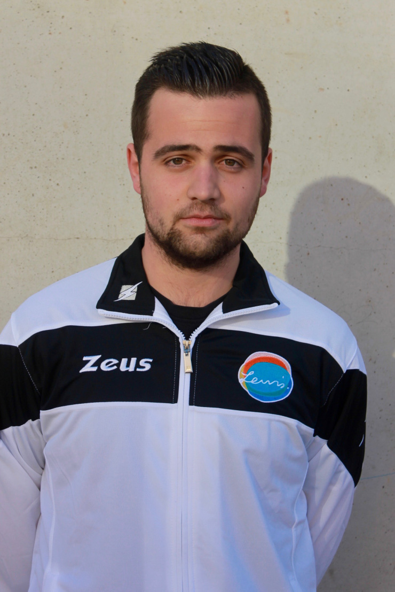

Soy Isidoro Sánchez Tardáguila, soy alumno de Ingeniería informática en la Universidad de Salamanca y curso la asignatura Interacción Persona-Ordenador. Soy un chaval con mucha imaginación y muchas ideas para el futuro. Si desea contactar conmigo para cualquier duda o sugerencia, envíame un email a la dirección de correo electrónico: isisancheztardaguila@usal.es 